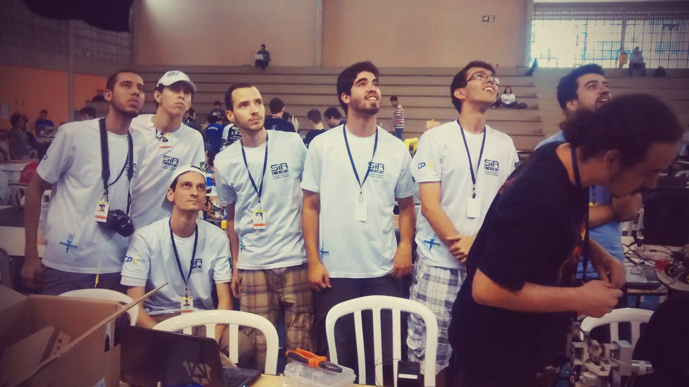
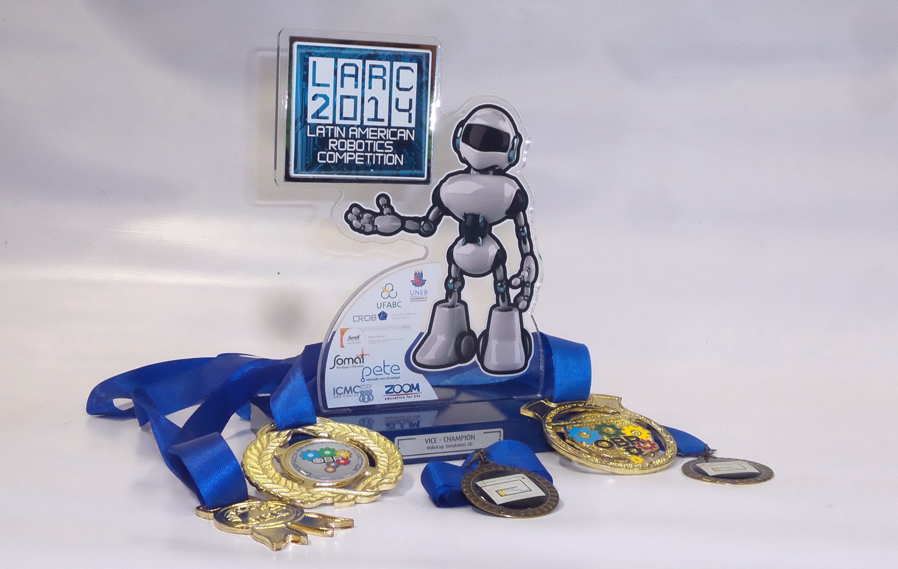

O SIRLab é um projeto de extensão e pesquisa que integra alunos da FAETERJ Petrópolis e do CPTI no desenvolvimento de soluções robóticas para competições nacionais e internacionais em Robótica e Inteligência Artificial.
Missão
Aprimorar o conhecimento dos alunos da FAETERJ Petrópolis e do CPTI, fornecendo um ambiente que estimule o desenvolvimento do pensamento computacional e interdisciplinar.
Visão
Contribuir para a sociedade com pesquisas nas áreas de Robótica e Inteligência Computacional e Artificial.
Valores
Através da curiosidade e o incentivo ao bom trabalho, construir sistemas de excelência.
Participações
2016
- 1º e 3º Lugar - Resgate Jr. OBR Etapa Regional
- 2º Lugar - Resgate Jr. OBR Etapa Estadual
2015
- Apresentação na MNR: Casa Inteligente
- 1º Lugar - Viagem Ao Centro da Terra (TJR)
2014
- 2º Lugar - RoboCup 2D Soccer Simulation (LARC)
- 1º e 3º Lugar - Resgate Jr. OBR Estadual